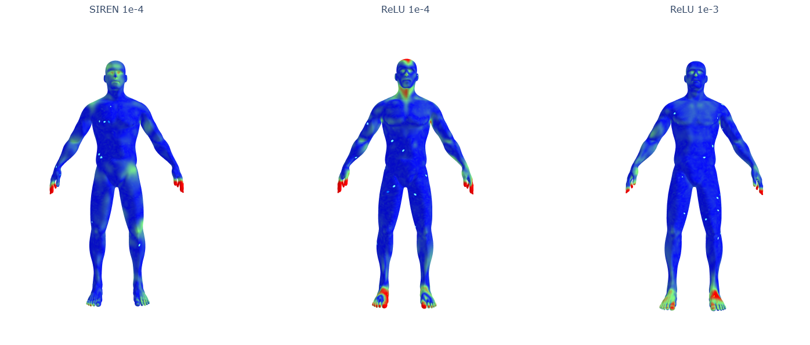
SIREN networks are widely said to reconstruct sharp detail better than ReLU networks, but published comparisons rarely change only the activation function. I built a reconstruction pipeline in which SIREN and a ReLU network share the same capacity, data, iteration count and extraction grid, and evaluated them with metrics that expose localised error. At the same learning rate SIREN halves the symmetric Chamfer distance and cuts its 99th-percentile accuracy error tenfold. Against a ReLU network at its better learning rate the two score within 0.08% on Chamfer distance, yet their 99th-percentile accuracy error differs 3.3×. Chamfer distance hides the gap because it adds two directed errors that here move in opposite directions and cancel.
Overview
Turning a point cloud or scan into a usable polygon mesh usually means fitting an implicit function and extracting its zero-level set with marching cubes. Classical methods such as screened Poisson reconstruction are fast and robust to noise, but they achieve that through a smoothness prior, and the same prior rounds off creases, corners and thin structures. This matters more now that virtualised geometry systems such as Nanite let assets carry far more detail than a frame rasterises: a crease lost during reconstruction cannot be recovered by any level-of-detail system downstream.
A neural signed distance field (SDF) learns its prior instead of imposing one. A small network maps a 3D position to the signed distance to the surface, and the result is meshed with marching cubes like any other field. Sitzmann et al. (2020) argued that the activation function decides how much high-frequency detail such a network can hold, and proposed SIREN, a network with sine activations, in place of ReLU. The claim is widely repeated but rarely tested with everything else held constant, and it is usually measured with a single mean error over the whole surface, which is insensitive to exactly the localised feature loss it is meant to show.
Research questions
- RQ1. Under a fixed compute budget, does a SIREN reconstruct sharp geometric features more accurately than a ReLU baseline?
- RQ2. Where does each architecture fail, and are the failures diffuse or concentrated in contiguous regions?
- RQ3. How informative are the standard reconstruction metrics for this question, and what does any disagreement between average and worst-case measures imply for how neural SDFs should be evaluated?
Method
Every stage before training is shared, because both networks load the same cached sample set, and every stage after training is shared and deterministic. Any difference between the output meshes therefore comes from the fitted network.
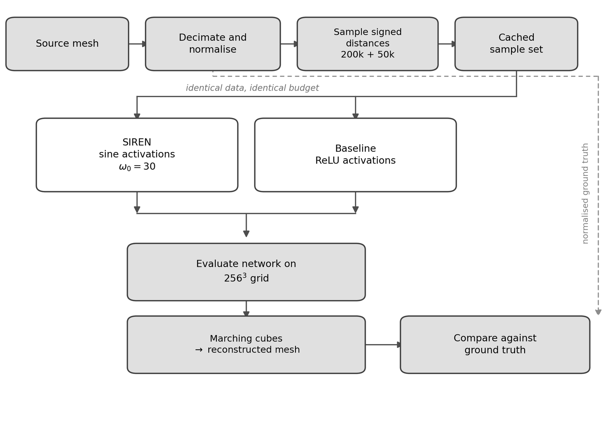
Data
The test object is a human base mesh, decimated to about 49,000 faces, made watertight so that inside/outside signs are well defined, and normalised to a bounding radius of 0.9. The training set has 250,000 point–distance pairs: 200,000 near the surface, displaced symmetrically by ±0.01 and ±0.05 so both sides of the surface are covered, and 50,000 uniformly in the volume so the network has no reason to create floating geometry in empty space. Signed distances come from an exact point-to-mesh query.
Two networks, one variable
Both networks are multilayer perceptrons with four hidden layers of 256 units, no positional encoding, and exactly 198,657 parameters. SIREN uses sine activations with ω₀ = 30 and the initialisation from the original paper; the baseline uses ReLU with Kaiming initialisation. Each gets the initialisation designed for its activation, because forcing one scheme on both would handicap whichever network it was not designed for.
SIREN layer · initialisation from Sitzmann et al. (2020)
class SineLayer(nn.Module):
def __init__(self, in_f, out_f, is_first=False, omega_0=30.0):
super().__init__()
self.omega_0 = omega_0
self.linear = nn.Linear(in_f, out_f)
with torch.no_grad():
if is_first:
b = 1.0 / in_f
else:
b = np.sqrt(6.0 / in_f) / omega_0 # keeps activations stable through depth
self.linear.weight.uniform_(-b, b)
def forward(self, x):
return torch.sin(self.omega_0 * self.linear(x))I tested ω₀ = 45 and 60 during development. Both kept the overall shape but added high-frequency noise across surfaces that should be smooth, so I kept the published value of 30.
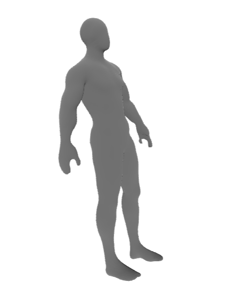
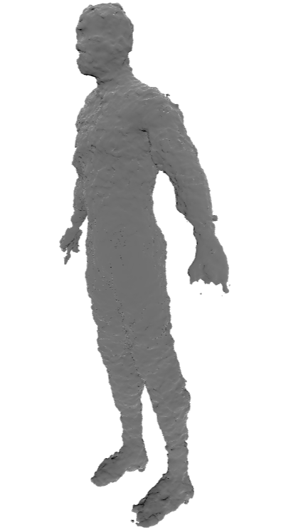
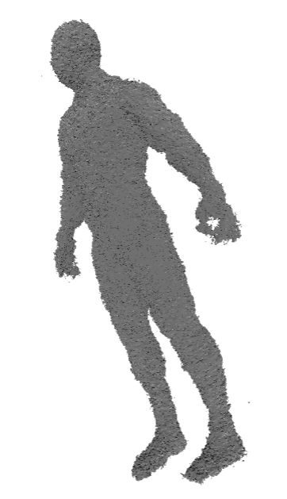
Matched training budget
Both networks regress the signed distance with an L1 loss on targets truncated to ±0.1, following DeepSDF, so capacity is spent near the surface that marching cubes actually reads. Training uses Adam, batch size 256 and 5,000 iterations on identical batches, with a fixed seed and no schedule, weight decay, clipping or early stopping, since each of those would add a setting that might favour one architecture.
The learning rate turned out to be the hard part. At 1e-3, which is conventional for a ReLU network of this size, SIREN never converges: its loss stalls around 0.03 and the field it produces cannot be meshed. I therefore ran both networks at 1e-4, and also ran the ReLU baseline at 1e-3, its better rate, so the comparison is reported both ways. A likely cause is weight scale: SIREN's hidden weights start around ±0.005 against roughly 0.09 for the ReLU network, so an Adam step of 1e-3 changes a SIREN weight by about 40%. I didn't instrument update sizes, so this remains a hypothesis.
Surface extraction and evaluation
Each network is evaluated on a 256³ grid (16.8 million queries, grid spacing 0.00784) and meshed with marching cubes. On CPU, training takes 56–72 seconds per network and extraction 224–290 seconds, so extraction costs 3–5× as much as training. Each reconstruction is compared with the ground truth using 200,000 seeded surface samples. I report the two directions of error separately: accuracy (how far reconstructed points are from the real surface, i.e. invented geometry) and completeness (how far real points are from the reconstruction, i.e. missing geometry). Each is reported at the median, 90th and 99th percentiles and the maximum, alongside symmetric Chamfer-L1, normal consistency, and the fraction of surface left uncovered across ten tolerances.
Results
All three configurations converged. Distances are in normalised units, where the mesh has a bounding radius of 0.9. The lowest error in each row is highlighted (highest for normal consistency).
| Metric | SIREN 1e-4 | ReLU 1e-4 | ReLU 1e-3 |
|---|---|---|---|
| Symmetric Chamfer-L1 | 0.008395 | 0.016943 | 0.008402 |
| Normal consistency | 0.9812 | 0.8881 | 0.9620 |
| Final training L1 | 0.00258 | 0.00394 | 0.00275 |
| Accuracy (invented geometry) | |||
| Mean | 0.003765 | 0.011202 | 0.004288 |
| Median | 0.003130 | 0.003097 | 0.002775 |
| 90th percentile | 0.006949 | 0.023261 | 0.006782 |
| 99th percentile | 0.012050 | 0.121113 | 0.039787 |
| Maximum | 0.018979 | 0.141698 | 0.059760 |
| Completeness (missing geometry) | |||
| Mean | 0.004630 | 0.005741 | 0.004115 |
| Median | 0.003208 | 0.003035 | 0.002805 |
| 90th percentile | 0.007729 | 0.012284 | 0.007380 |
| 99th percentile | 0.040389 | 0.047501 | 0.026629 |
| Maximum | 0.099631 | 0.099202 | 0.055729 |
At the same learning rate the answer is yes. SIREN halves the Chamfer distance and its 99th-percentile accuracy error is about 10× lower. The median errors are almost identical, so the ReLU network fits most of the surface just as well and fails badly on a small part of it, with a maximum error of 15.7% of the bounding radius against SIREN's 2.1%.
Against ReLU at its better rate the result is mixed. SIREN invents almost no geometry: nothing it produces strays more than 2.1% of the bounding radius from the true surface, and it has the best normal consistency. The ReLU network is better at the typical point and misses less of the surface at every completeness percentile. The two are wrong in opposite directions.
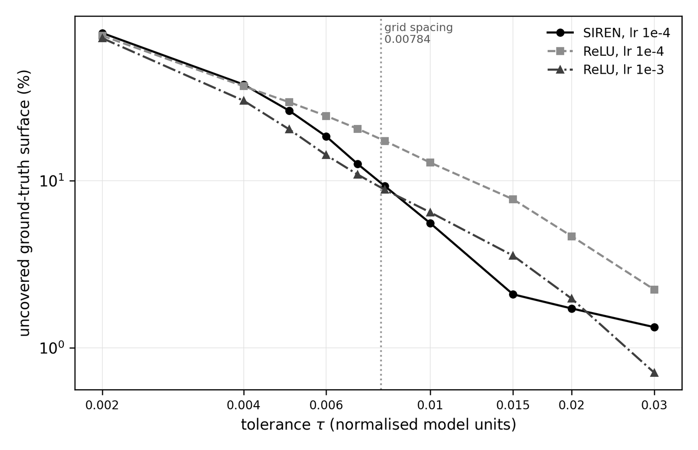
Where it fails
At a tolerance of 0.010, the vertices each reconstruction misses form 35 to 39 connected regions in every configuration, and the five largest regions hold 58–65% of all missed vertices. These are contiguous patches, not scattered noise. They sit on surface with about 2.2× the curvature of the rest of the body, and that ratio varies by less than 7% between configurations.
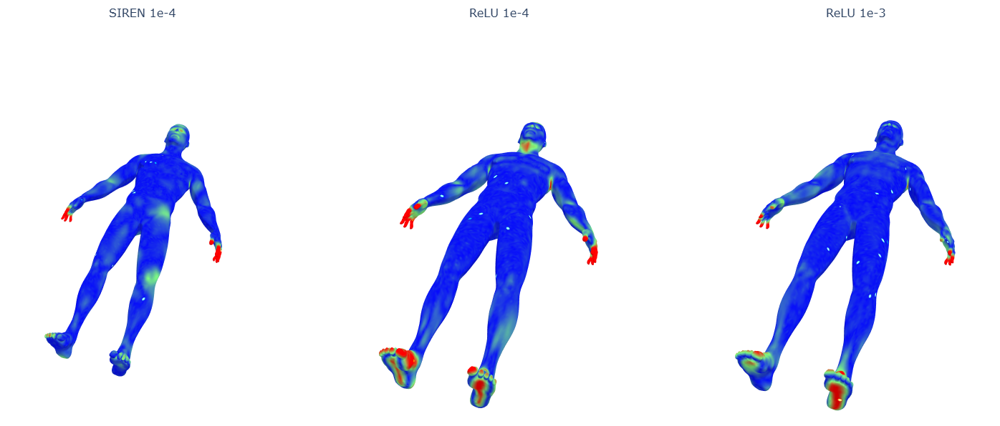
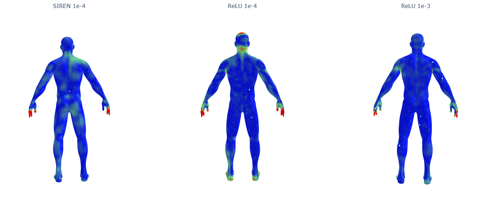
The same places fail in every run (fingers, toes and outer ears), so the activation function changes how badly the pipeline fails there but not where. That points at what all the runs share: a grid spacing only slightly finer than a finger, area-uniform sampling that gives thin extremities the fewest samples, and the medial-axis ridges in the distance field between surfaces that sit close together. On this evidence the bigger levers for feature preservation are the sampling and extraction stages; the choice of nonlinearity is a second-order effect.
The metric problem
The most useful finding is about measurement. Symmetric Chamfer distance is the sum of the mean accuracy and mean completeness errors. For SIREN that is 0.003765 + 0.004630 = 0.008395, and for ReLU at 1e-3 it is 0.004288 + 0.004115 = 0.008402. SIREN is 12.2% better on one term and 12.5% worse on the other, the differences cancel, and a study that reported only Chamfer distance would have concluded the activation function makes no difference here.
That leads to a cheap minimum standard for anyone claiming feature preservation:
- report the two directed errors separately, not only their sum;
- report at least one tail percentile next to the mean;
- report coverage across a range of tolerances, with the grid spacing marked, rather than at one chosen threshold.
Bugs that flipped the result
Three defects each invalidated the runs made before they were fixed, and fixing them reversed the headline result. In the earliest runs the ReLU network led on Chamfer distance.
- Different training data. The two scripts sampled points independently, and the baseline's near-surface offsets pushed points inward instead of spreading them evenly about the surface. Fixed with one seeded, cached sample set loaded by both.
- Unequal sample counts. The baseline held out 5% of the samples and SIREN did not, so they trained on 237,500 and 250,000 points.
- A silent gradient bug. The loss clamped the prediction as well as the target. Outside ±0.1 the clamp has zero gradient, so a network whose outputs drifted stopped learning entirely while the loss curve still looked plausible. It surfaced only when marching cubes failed on a field with no zero crossing.
Training step · clamp the target, never the prediction
gt = torch.from_numpy(sdf).clamp(-cfg["clamp"], cfg["clamp"]).to(device)
for it in range(cfg["iters"]):
idx = torch.randint(0, n, (cfg["batch_size"],), device=device)
pred = model(pts[idx]) # unclamped, so the gradient always flows
loss = (pred - gt[idx]).abs().mean()Extraction guard added after the bug
if not (volume.min() < 0.0 < volume.max()):
raise RuntimeError("no zero crossing — network did not learn a signed field")Two of the three trace back to maintaining two training scripts instead of one parameterised entry point. Three cheap checks would have caught every defect: an assertion on the mean displacement of near-surface samples, a logged fraction of predictions outside the clamp band, and a logged gradient norm.
Limitations & future work
- One mesh, one seed, no repeats, so small differences (including the 0.08% Chamfer gap) cannot be separated from noise.
- The test mesh is organic. Its hard regions are thin extremities, not the creases and corners of CAD parts, so no claim is made about those.
- The 256³ grid limits detail near the fingers and toes; a 512³ run would separate grid limits from network error.
- The ReLU baseline has no positional encoding, so it is the plainest reasonable ReLU network rather than the strongest available alternative.
- Truncated targets mean neither network learns a valid distance field away from the surface, which rules out sphere tracing.
Next steps: repeats across seeds, a CAD test set, extraction at 512³, a screened Poisson baseline, a sweep over ω₀, and a hash-grid encoding as a third architecture to test whether detail is better obtained from the activation function or from the input representation.
Appendix: architecture tests
Before building the ReLU baseline I tried wider and deeper SIREN variants informally, then kept the smallest configuration (4 hidden layers of 256) for the comparison.
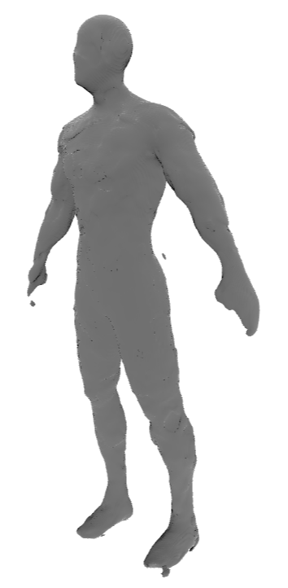
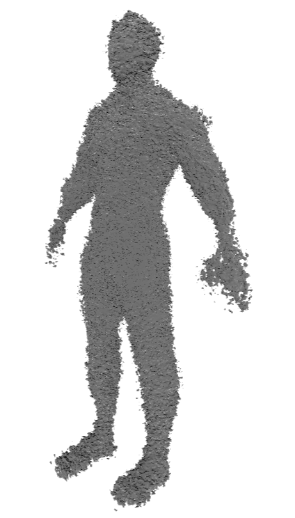
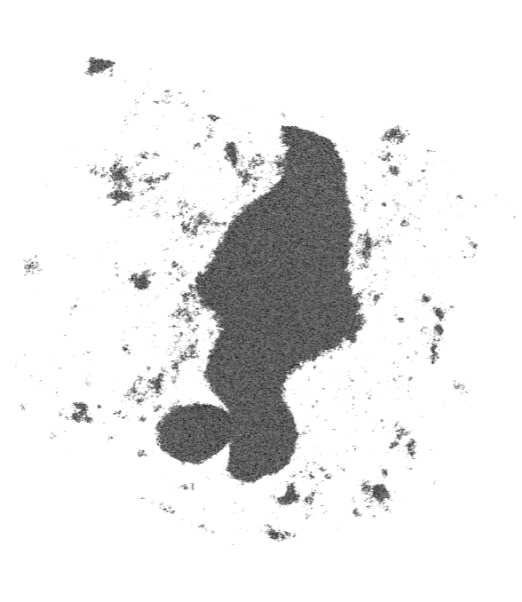
Full report
The dissertation covers the literature review, the full hyperparameter tables, the computational cost of each stage and the complete discussion.
Sharp-Feature Preservation in Neural Signed Distance Fields under a Fixed Compute Budget MSc dissertation · PDF · 46 pages · 1.1 MB
Download reportTest mesh: “Male Base Mesh” by nixor, credited to Paul Chen, Free3D, Personal Use License.